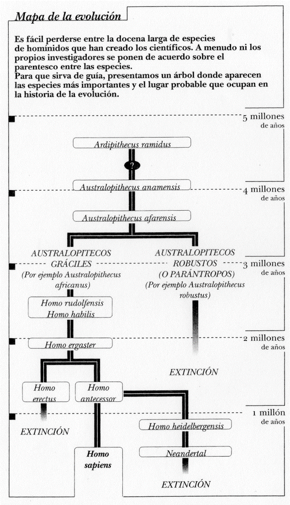
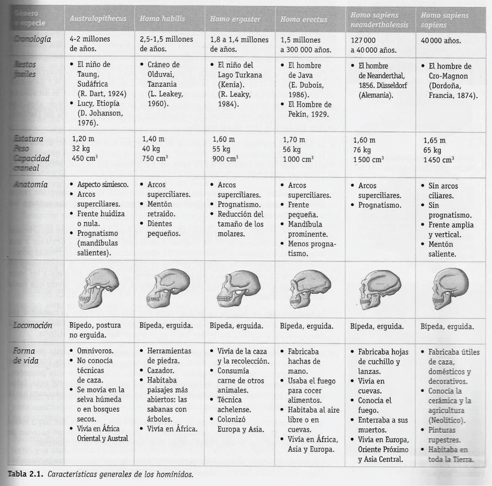

6. La génesis de lo humano
6. La génesis de lo humano
Según se ha dicho ya, el ser humano es producto de un largo proceso de hominización y de humanización, que implica la conjugación de, al menos, los siguientes factores:
1. Transformaciones medio-ambientales. Las pruebas geológicas, botánicas, climatológicas y ecológicas muestran que en los comienzos del Mioceno Inferior, hace unos 15 ó 20 millones de años, África Central estuvo expuesta a cambios en su régimen de lluvias con el resultado de largos periodos de sequía. Los efectos de la sequía fueron que las grandes zonas boscosas retrocedieron, transformándose en sabanas. La transformación de los bosques en sabanas se cumplió a lo largo de cientos de miles de años. Los primates que, durante la transformación, vivían en los límites del bosque, y tenían, por tanto, un modo de vida mixto, debieron adaptarse a las nuevas condiciones ecológicas o desaparecer. Nuestros antepasados se adaptaron a las exigencias de la sabana.
2. Variación de la dieta. La primera exigencia de cambio que impuso la vida en la sabana fue que ésta ofrecía alimentos distintos de los que ofrecía el bosque. Se supone que la variación de la dieta se realizó en tres momentos. El primero es el paso de una alimentación basada en las hojas de los árboles a otra basada principalmente en leguminosas y gramíneas que contienen una mayor cantidad de calorías. Algo después, los monos antropomorfos comenzaron a atrapar animales lentos y, en consecuencia se convirtieron en omnívoros. El último paso consistirá en la caza de mamíferos de mayor tamaño.
3. Cambios en el organismo. Los dos factores anteriores explican bastantes de los cambios que se produjeron en el organismo de nuestros antepasados. Así, la bipedestación, la liberación de la mano y la formación del pie favorecieron la vida en la sabana. La precisión de los dedos de la mano, y la coordinación entre vista y mano posibilitaron la adaptación de los individuos a una nueva dieta. La visión estereoscópica y la posición erecta facilitaron la caza de animales. La dieta omnívora cambió la forma de los dientes y, con ella, la de la cara. El aumento de la capacidad craneal y el desarrollo del cerebro pueden explicarse, en parte, por la nueva dieta, mucho más rica en calorías y proteínas. La reorganización del sistema nervioso, con el efecto de neutralizar conductas determinadas genéticamente y desarrollar la capacidad simbólica, es fruto de la transmisión de mutaciones genéticas que se adecuaron a la caza, a problemas que obliga a resolver, y a la cooperación entre los participantes que precisa.
4. La herramentización. Influida por la bipedestación y la conexión entre la vista y las manos. Su desarrollo se puede resumir en tres momentos. El primero consistiría en un uso casual de herramientas. En un segundo momento vendría la transformación de herramientas, que implica la transformación de un objeto para adaptarlo a un uso. Y el tercero consistiría en la fabricación de herramientas con ayuda de otras herramientas, que es el que define propiamente al ser humano. La utilización de herramientas va, además, unido a la caza, tanto en su evolución como en los efectos que, conjuntados, producirían en las capacidades cerebrales y en el desarrollo de la inteligencia, de la comunicación simbólica y de la cooperación. Con esta conjunción, se hace posible el distanciamiento del medio, y supone un alto grado de cooperación y comunicación, pues implican una acumulación de experiencias sólo posible a través de su transmisión.
5. Retraso de la ontogenia. El individuo humano precisa de un largo periodo de tiempo para desarrollar las habilidades propias de la especie: mantenerse erguido, caminar, hablar... y un periodo de aprendizaje que se extiende más allá de la infancia. Este retraso está condicionado por la escasa determinación genética que posee el ser humano con respecto a otros animales.
La interacción de todos estos factores constituye la base sobre la que se desarrollaría la humanización, como un modo de adaptación, o más bien, de dominio del medio ambiente mucho más poderoso que la evolución biológica.

